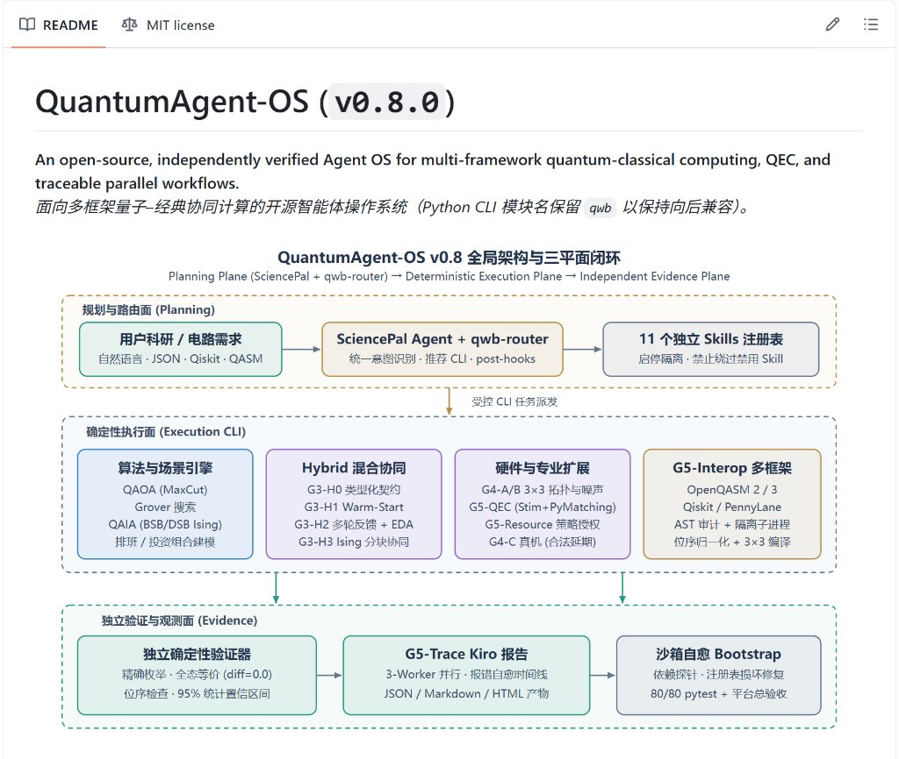
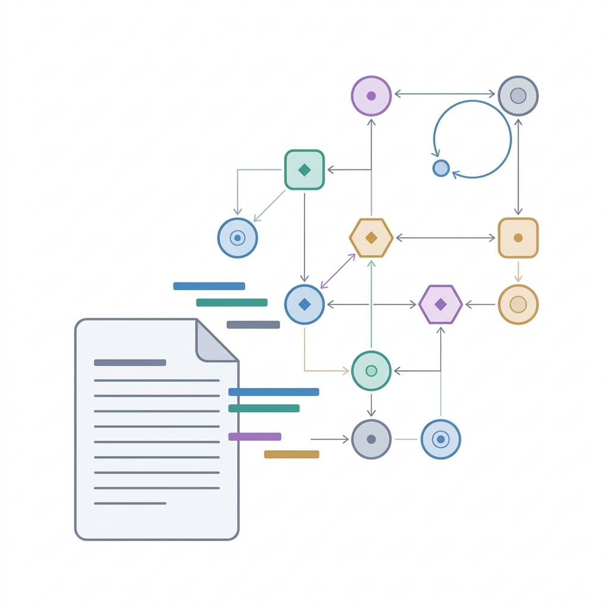
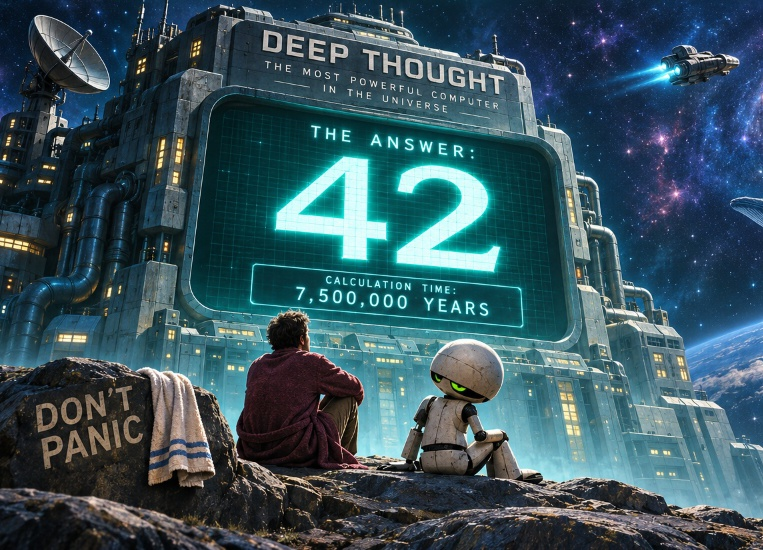

Karl Popper · 科学哲学家
科学理论的试金石，在于它是否敢于接受可证伪的严格检验。
让论文成为可检验、可接续的研究系统
从论文主张出发，在沙箱中核对原始证据、检验分析边界，交付可接续的研究接力包。
01 · 项目总览
BeyondPaper 将论文正文与公开代码、数据接入具身科研 Agent，通过确定性脚本与沙箱重跑核清证据边界，再交由研究者交互核查并开启下一步科学探索。
02 · 科学观与行业痛点
本次比赛的主题是 AI in Action, Science Forward。不同学科的检验形态各异，但内核一致：科学不是持续吐出“答案”，而是提出可检验的解释，让证据、反例与重复实验不断推动自我修正。
科学理论的试金石，在于它是否敢于接受可证伪的严格检验。
无论多么偏爱一个假说，只要事实给出反证，就必须果断放弃它。
科学与其说是一套知识体系，不如说是一种内置自我修正机制的思维方式。
学术论文具有不可替代的公共记录价值，但在 AI 加速科研的当下，传统静态论文正面临三重结构性局限——论文记录了终点，却有损压缩了过程：
一项研究背后的几百个分析选择与失败路线在定稿时被省略。后来者既面临代码跑通的复用门槛，更面临“结论何时成立”的认识门槛。Kapoor & Narayanan（Patterns, 2023）梳理出 17 个学科领域 294 篇受数据泄漏影响的机器学习论文。
AI 降低了写作门槛，2026 Q1 主流期刊投稿同比再涨 33%，顶会投稿直逼两万，人类审稿池透支，顶刊案头拒稿率升至 75%–90%。
旗舰期刊从投稿到接收动辄 8–10 个月（Nature 接收中位数约 321 天），论文刊出时更强的方法往往早已出现。今天存储瓶颈已缓解，“理解、核查与及时接续”的瓶颈却愈发突出。
在算力、基座模型与自动化实验室的“上半场”之后，下半场的核心命题转向科研体系的系统性演进——研究成果如何被可验证地交付、检验、共享和接续（受鄂维南院士“平台科研”与科研范式演进讨论启发）。BeyondPaper 正是其中面向计算论文的知识与证据层原型。
03 · 核心方法与系统架构
BeyondPaper 不输出草率的“对/错”裁决，而是围绕每条核心主张连续追问三个问题，并通过 9 个自研 Skill（47 个文件、约 8,700 行 Python 确定性脚本）串成 4 段可追溯工作流。
将正文主张、图表数字、作者公开存档与源码逐一绑定；能重跑的数字，直接在沙箱中重新计算核对。
在代码中实际存在的合理选择（随机种子、正则化系数、数据划分、特征数）上做多宇宙压测，定位翻转条件。
把证据缺口、敏感边界与失败路径转化为竞争假设与按期望信息增益（EIG）排序的后续实验清单。
bp-claim-ledgerbp-pitfall-atlasbp-consistency-checkbp-ghost-variablesbp-multiversebp-relay-package & bp-null-resultbp-next-experiment & bp-paper-agent凡是能精确计算、文件比对和统计复算的环节一律固化为确定性脚本，让模型专注于论文阅读、假设推理与边界追问。查看 9 个 Skill 源码 ↗
SciencePal 承担自定义 Agent 编排、Linux 沙箱执行、文献检索与可回放展示。留一法验证表明，去掉胃癌主例自身记录后，bp-pitfall-atlas 仍覆盖了该论文实际出错的全部 5 种机制。
04 · 核心工程创新
自动科研审计最难的是防止审计者冤枉论文。初赛时原样论文上全部 10 条误报均源于 R→Python 移植偏差，因此我们建立了“复现校验 + 逐条执行核验”双防线。
| 校验状态 | 论文陈述 × 作者存档 × 沙箱重跑 | 归因与处理原则 |
|---|---|---|
reproduced |
三方数值完全一致 | 确认复现 可作为后续追问基线 |
archive_ok |
未重跑，但作者公开存档与论文一致 | 存档一致 尊重作者存档记录 |
port_gap |
作者存档与论文一致，仅本次重跑不同 | 标灰 · 归因审计者 移植/环境差异，绝不归罪论文 |
archive_mismatch |
作者自己的存档输出与论文陈述不一致 | 构成冲突证据 标为待核实冲突并附命令输出 |
not_reproduced |
缺乏作者存档对照且重跑不一致 | 至多标黄 证据不足以直接标红，交人工复核 |
引入复现校验后，原样论文上因 R→Python 移植导致的误报从 10 条降至 0 条（如 Hardwicke 2021 论文中 34 个数值复现、19 处移植差异准确标灰为 port_gap，0 误报）。
模型提出的每条重要警示都必须附带沙箱实测命令与输出文件，核验不通过自动降灰；所有级别调整记录于 severity_changes.json，确保全程可回放审计。
05 · 深度案例与定量验证
第一层：脚本核对出的代码与文件证据
perm.fit(Xtest, ytest)）；0.01，代码实际运行 0.005；90% 分位写为 95% CI。第二层：论文智能体先锁基线，再做反事实追问
解释边界：0.683 → 0.921 揭示结论对正则化参数高度敏感，需结合特异度与独立队列综合判断，而非直接推论“新参数更优”或“论文被推翻”。B14 亦归类为稳健性问题而非草率定性“造假”。
| 评测集 | 样本与运行口径 | 主版 v1.11.16 实测结果 | 口径说明 |
|---|---|---|---|
| 已知答案基准 | 5 篇原样版 + 5 篇人工植入版（10 次运行） | 植入 20/20（9 红）；真实累计 26/34；红/黄灯 48/48 属实，0 红色误报 | 参与了规则迭代，用于回归验证，与盲测分开报告 |
| 未见论文盲测 | 开发后新增 5 篇有效未见论文（各 1 次） | 红/黄灯 28/31 属实，3 黄误报（全在 B14）；7 红中 6 属实、1 待核实、0 红色误报 | 独立外推检验；B13 因付费墙缺全文未完成单列排除 |
| 两组合计 | 15 次主版选定运行 | 人工逐条复核 76/79（约 96%） 属实，已判定红色误报 0/23 | 详见 summary.md ↗ |
06 · 交付物
每次完整运行交付四类结构化、可追溯的材料，并把经人工核实的新失误机制沉淀回跨论文失误库 bp-pitfall-atlas。
passport.md）逐条记录核心主张的证据灯号、原文页码、代码行号、作者存档比对结果与复现等级，5 分钟摸清论文家底。
failure_paths.md）把论文没写出来的失效条件、参数翻转边界与无法复现环节显式保存并支持跨论文检索，避免重复踩坑。
结合文献检索与审计缺口提出竞争假设，并按期望信息增益（EIG）排列最值得优先开展的验证实验。
提供面向审稿或尽调的一页摘要，以及支持 reproduce / whatif / claims / next 的论文智能体——通过基线与确定性测试后才开放真实重跑。
07 · 应用价值
同一条可追溯证据链在四种科研决策中的自然投射，呼应科研“平权化”与打破“理论/实验、学科、科研/产业”三道边界的愿景。
主张与代码数据逐一绑定，标明复现状态与缺失材料，大幅降低起步成本，让证据扎实的年轻团队站上更公平的起跑线。
先完成全面、可重复的数值与代码筛查，输出审稿一页简报与待回应清单，让人类审稿人聚焦核心科学判断。
按“报告效果 → 材料核对 → 敏感边界 → 待补独立验证”的顺序呈现风险，缓解学术与产业之间的信息脱节。
不只停在“挑错”，而是沉淀结论边界、失败路径与竞争假设，直接指向下一轮最能减少不确定性的探索。
08 · 跨领域拓展与人机协作试点
主版评测之外，我们开展了跨底层模型适配与量子计算人机协作接力试点（独立于主版统计），印证 BeyondPaper 核查的是跨学科共性的计算研究证据结构。
第一轮 60 点小测试集曾跑出“量子领先 +0.089”；扩大至 1,000 个独立测试点与 10 种子配对检验后优势消失，团队主动撤回了初步判断。
前两轮算出的表面码参数 Λ 似低于论文的 2.04；第三轮核清 Table S1 与 Libra 解码器对应关系后重算得 2.035（与 2.04±0.02 一致）。
围绕 QNN 有效维数脚注疑点枚举 224 组配置形成带脚本短文草稿；并在 SciencePal 适配 Kimi K3 与 GLM 5.3，验证工程护栏可跨模型迁移。

为什么选择 BeyondPaper 参赛？
在体验 SciencePal 的过程中，我们也顺手在量子计算主业做了独立开源项目 QuantumAgent-OS，降低多框架量子电路与纠错的使用门槛。
但决赛我们依然选择 BeyondPaper：垂直工具解决的是“上半场”单一领域的效率，而 BeyondPaper 切入的是“下半场”跨学科共性的底层命题——无论未来科研 Agent 产出多快，所有成果最终都要回答：证据能否核对？边界是否稳健？下一位研究者如何接续？
09 · 生态坐标与未来升级
在清晰可控的预算与验证指标下高速自动迭代，大幅加速实验探索。
将文献中被压缩的推理链显式化，构建长推理链知识库与反向知识搜索。
将开源论文代码转化为可交互 AI 工具，聚焦方法层面的忠实执行。
在忠实复现的基础上再问一步：证据够不够？合理改动后稳不稳？失败路径与下一实验是什么？
显式记录每轮研究的竞争假设、前置条件、代码/数据版本、沙箱命令、输出及保留/撤回理由，全链路可查。
吸收 SciencePedia 反向知识搜索思路，从主张反向检索支持/反驳运行、失败路径与跨论文先例，打通推导链与证据链。
为自动科研循环装上证据护栏——每轮不仅问“指标涨没涨”，更追问“是否真支持原假设、口径有无变化”。

① 材料公开度：依赖全文、代码或数据公开，缺失材料时如实标明缺口。 ② 沙箱算力：当前 CPU Linux 沙箱尚无完整 R 与 GPU 环境，重算力与湿实验需外部接力。 ③ 模型稳定性：平台级底层模型锁定与更大规模跨学科公开盲测是持续补齐重点。
10 · 深度问答（决赛答辩备份）
meta.json 中单列为 excluded 并保留原始记录。
reproduce 确认 9/9 基线一致，再跑 whatif α=0.02 证明外部敏感度对该正则化参数高度敏感（对比 k=15 仅变化 −0.016）。评价新参数是否更优需结合特异度与独立前瞻队列验证。系统把可重算的证据和参数边界透明呈现给研究者，不替人类宣布“论文无效”。

11 · 结语与初心
《银河系漫游指南》里，超级计算机“深思”算了 750 万年给出终极答案——42，可没人真正理解它回答的究竟是什么问题。
汽车解放了双脚，但我们依然为了热爱去奔跑；如果 AI 替你把游戏全自动通关，通关的那一刻，游戏的乐趣也随之消失。基于人类好奇心的自由探索，始终是颠覆性创新的核心。